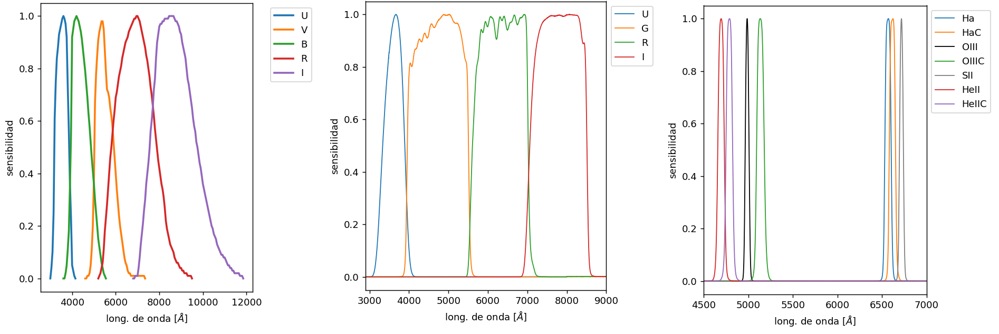
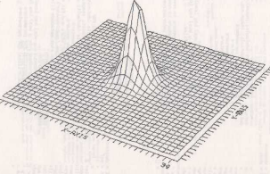
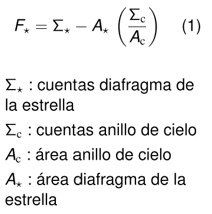
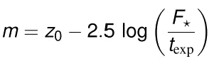
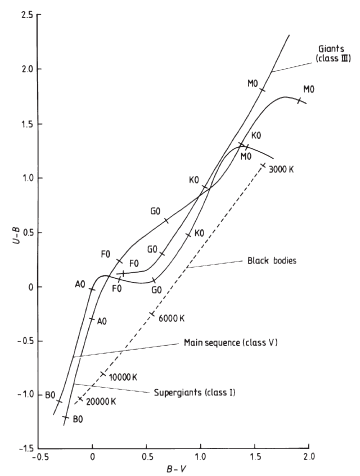
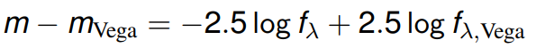

Fotometría de apertura
Autorxs: Thiago Antognini
Introducción
La fotometría es una herramienta que nos permite obtener una medida directa del flujo de energía de las estrellas. Para eso utilizamos diferentes sistemas de filtros que nos permite obtener información en diferentes longitudes de onda, y que se centran en la absorción/transmisión o en la interferencia de la información que nos llega. No existe un sistema único para todas las mediciones, sino los utilizamos dependiendo la longitud de onda y el ancho del filtro que nos interesa. Los fotones incidentes de las estrellas que medimos los vamos a encontrar en ADUs (Analog Digital Unit).
Filtros y Observación
Los filtros los caracterizamos en función de su sensibilidad, ancho de banda y su longitud efectiva. Existen filtros de banda ancha (∆λ ~ > 300 Å), banda media (∆λ ~ 200-300 Å) y banda baja (∆λ ~ 50-100 Å). “Johnson/Cousins“: U, B, V, R, I, “Gunn“: u, v, g, r, Sloan Digital Sky Survey (“SDSS”): u0, g0, r0, i0, z0, y Halpha son ejemplos de sistemas fotométricos que utilizamos. La sensibilidad la podemos visualizar en gráficos, que nos muestran para cada filtro el porcentaje de transmisión en función de las longitudes de onda.

Con ésta sensibilidad, junto a la distribución espectral de la fuente, obtenemos la energía recibida por nuestro detector. Por ejemplo, si tomamos un una distribución espectral de una estrella tipo B9V (en azul), y la filtramos teniendo en cuenta la máxima y mínima longitud de onda del filtro V, la convolución entre la sección filtrada de la distribución espectral y la sensibilidad del filtro (en naranja) nos define nuestra energía recibida (en rojo).

A la hora de captar imágenes podemos encontrar diferentes problemas, dependiendo si queremos observar objetos puntuales (estrellas y pulsares) u objetos extendidos (planetas, nebulosas y galaxias).
Para el caso de observación de objetos puntuales nos encontramos que las imágenes estelares varían en cada observación, debido a la difracción de la luz y sobre todo a la atmosfera terrestre. Si suponemos observar una única estrella podemos definir su PSF (Point Spread Function) como la forma que toma la imagen de ésta estrella.

Si trabajamos con un tiempo de exposición razonable mayor a 10 milisegundos, el tiempo de coherencia (intervalo donde una onda electromagnética tiene una fase predecible), la dispersión puede ser originada por el seeing atmosférico, la falta de precisión en el guiado o en el enfoque del telescopio. Los pixeles que contienen información de la estrella también van a contener información del brillo del cielo (Skyglow), por lo que vamos a tener que separar ambas informaciones. Además, en campos estelares densos las distintas imágenes estelares se pueden superponer.

En la observación de objetos extendidos, además de tener los mismos problemas, podemos incluso desconocer la extensión y la forma del objeto (si tuviese).

¿Cómo medimos?
Ya teniendo nuestros objetos de estudio necesitamos poder medir las magnitudes instrumentales. Para esto tenemos en principio dos posibles herramientas, la fotometría PSF y la fotometría de apertura.
La fotometría PSF nos ayuda a solucionar problemas que surgen cuando tenemos campos estelares muy densos, donde las imágenes estelares están demasiado juntas y es difícil utilizar la fotometría de apertura. Nos basamos en la idea que todas las estrellas de una determinada exposición poseen en principio PSF similares, por lo que primero necesitamos realizar una fotometría de apertura como primer aproximación PSF en estrellas brillantes y aisladas de nuestro campo. El procedimiento es el ir ajustando la PSF a las estrellas detectadas en la imagen, generar una nueva imagen en la que quitamos esas estrellas y buscar en esta nueva imagen nuevas estrellas que todavía no hemos detectado. Luego realizar un nuevo ajuste PSF en la imagen original incluyendo todas las estrellas.

La fotometría de apertura es una de las formas para obtener la magnitud instrumental de un objeto, y depende del detector que utilicemos (Tubo Fotomultiplicador, Placas fotográficas, CCDs). La magnitud instrumental la relacionamos con la cantidad de "cuentas" detectadas del objeto, donde las "cuentas" son la unidad de los ADUs, tal que

Actualmente usamos los CCDs como detector para poder realizar la fotometría posterior a la observación, utilizando las "cuentas" que detectamos dentro del circulo que encierra la estrella y las del anillo centrado en la estrella.

El flujo de la estrella medida va a estar dado por la formula

donde el mecanismo se basa en restarle el agregado del cielo circundante a las "cuentas" que corresponden al circulo que encierra nuestra estrella. Luego con esa información obtener finalmente la magnitud instrumental, utilizando la formula

donde z0 es nuestro punto de calibración arbitrario y texp es el tiempo de exposición.
Obtener las magnitudes también nos permite trazar "curvas de crecimiento". La relación entre el flujo medido y la apertura del circulo que encierra la estrella nos muestra que luego de determinada apertura la magnitud que obtenemos se estabiliza en una recta, ya que estamos, a priori, considerando toda la información posible con nuestro radio de apertura actual. Por lo que si trazamos una curva de luz y no vemos esta tendencia recta, podemos intuir que algo falla en los datos que obtuvimos. Esto hace que las curvas de crecimiento sean herramientas valiosas en nuestro análisis.

¿Cómo utilizamos la fotometría de apertura?
La fotometría de objetos puntuales es lo que hacemos en la práctica de la materia, donde ya teniendo la imagen correspondiente necesitamos buscar y centrar los objetos, estimar nuestro "background" y determinar nuestro valor de apertura (grande, mediano o pequeño). Cada decisión va a ser importante para el estudio que hagamos posteriormente, donde no es lo mismo tener un campo de estrellas mas "complejo" o mas "sencillo".

Estas magnitudes instrumentales son idealmente monocromáticas, dependientes de la longitud de onda que estemos utilizando, por eso es importante tener bien definido nuestro sistema de filtros, y tener en cuenta que las magnitudes siguen la "ley de Bouguer"

donde "Z" es la distancia cenital y "a sub lambda" es lo que nosotros llamamos "K", el coeficiente de extinción, que puede variar durante la noche o incluso para cada medición. La relación entre la magnitud observada con la distancia cenital nos define una grafica bastante característica de la fotometría de apertura. Si utilizamos la ley de Bouguer se logra obtener el coeficiente de extinción midiendo la pendiente de la grafica formada

Con la magnitud instrumental podemos definir lo que llamamos "índice de color", que en si es la diferencia entre magnitudes de una estrella tomadas en dos filtros diferentes, como los filtros del sistema estándar UBV ( C = B - V o C= U - B). El filtro U se encuentra cercano al salto de Balmer, por lo que el coeficiente U - B es sensible a la luminosidad y a la temperatura, en cambio el índice B - V es representativo de la temperatura efectiva. Estas relaciones son representativas de las estrellas en secuencia principal.
Un diagrama color-color es aquel donde ubicamos la relación entre nuestros índices de color B - V y U - B tomados

Esto nos ayuda a, por ejemplo, ubicar estrellas que se encuentran fuera de nuestra secuencia principal.
Finalmente, para poder calibrar nuestras magnitudes instrumentales al sistema estándar definimos magnitudes respecto a estrellas estándares, como es el caso del sistema de magnitudes Vega. Para esto usamos la "Ley de Pogson"

en este sistema la magnitud de Vega es igual a cero por definición para todos los sistemas de filtros y el ultimo termino de nuestra ecuación tiene un cierto valor tabulado. Existen diferentes maneras para calibrar nuestras mediciones utilizando diferentes conjuntos estándares, como el sistema STMAG y el ABMAG donde el flujo de la estrella estándar es siempre es una constante.
Conclusiones
La fotometría de apertura es una gran herramienta para estudiar objetos y obtener información valiosa. Obtener las magnitudes aparentes para diferentes filtros nos abre la oportunidad de estudiar diferentes parámetros estelares, como el coeficiente de color que a su vez nos permite ubicar nuestros objetos en un diagrama color-color, y también nos brinda información sobre la naturaleza de las estrellas que estamos estudiando.
Referencias
G.L.Baume - Astronomía Observacional: Técnicas Observacionales: Fotometría.
Técnicas experimentales en Astrofísica - Jaime Zamorano - Físicas UCM- Fotometría
Astrophysical Techniques - C.R.Kitchin
R. Gamen - Astronomía Estelar: El sistema astronómico de magnitudes y colores y su vinculación con la escala física.
Sergio A. Cellone - Fotometría diferencial de abertura